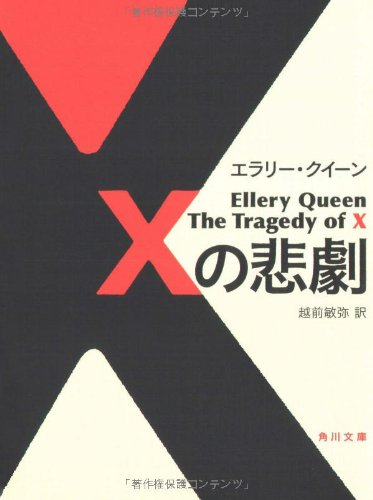
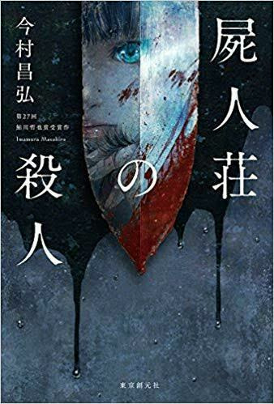
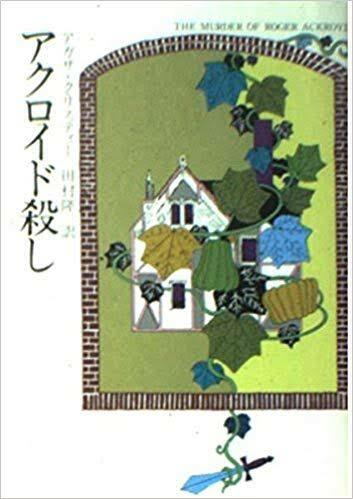
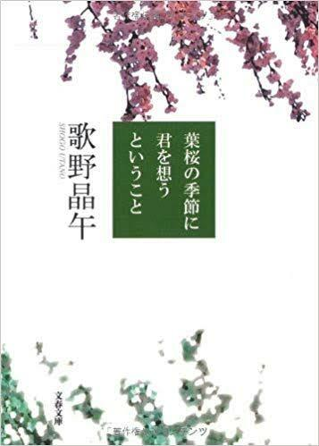
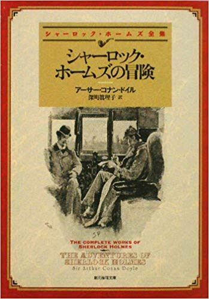
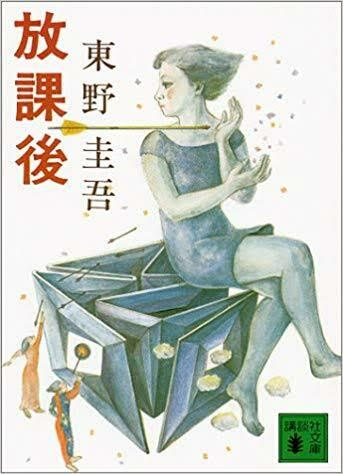

ホーム
ミステリー
近代文学
テクノロジー
その他

タイトル：Xの悲劇
著者：エラリークイーン
刊行年：1932年
コメント：名優ドルリー・レーン
シリーズ四部作の記念すべき一作目！

タイトル：屍人荘の殺人
著者：今村昌弘
刊行年：2017年
コメント：ミステリランキング驚異の4冠！映画化！

タイトル：アクロイド殺し
著者：アガサ・クリスティー
刊行年：1926年
コメント：ミステリ界に大きな波紋を投じた作品！

タイトル：葉桜の季節に君を思うということ
著者：歌野晶午
刊行年：2003年
コメント：最後の１ページまで目が離せない！

タイトル：シャーロックホームズの冒険
著者：アーサー・コナン・ドイル
刊行年：1892年
コメント：名探偵シャーロックホームズシリーズの第１短編集！

タイトル：放課後
著者：東野圭吾
刊行年：1985年
コメント：ミステリー作家の重鎮東野圭吾のデビュー作！